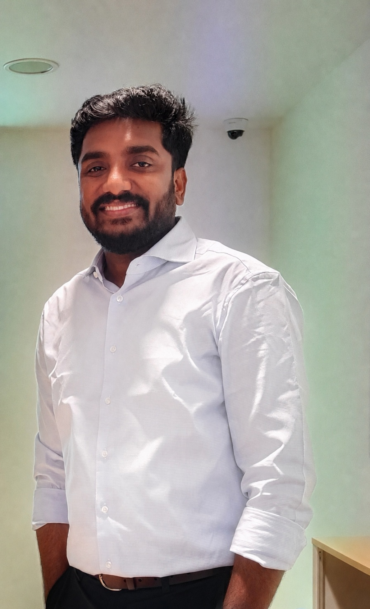

Equipo
Investigadores de distintas disciplinas que trabajan juntos en barreras cerebrales, herramientas moleculares e imagen de la enfermedad.
Investigador principal
Xiaohe Tian, PhD
Profesor · Investigador principal · Director de tesis doctorales
Xiaohe Tian dirige Tian Lab en el Hospital de China Occidental de la Universidad de Sichuan. Su investigación conecta el transporte a través de las barreras cerebrales, el diseño de interfaces multivalentes y la imagen molecular con preguntas sobre enfermedades neurodegenerativas y nanomedicina. Se formó en la Universidad de Anhui y la Universidad de Sheffield y realizó investigación posdoctoral en química en University College London.
Formación
Grado, Universidad de Anhui; máster y doctorado, Universidad de Sheffield
Formación postdoctoral
Departamento de Química, University College London
Cargos y reconocimientos
Programa nacional para jóvenes talentos; programa Tianfu Emei de Sichuan para jóvenes talentos; director de tesis doctorales; editor asociado de iBrain
Contactar con Xiaohe Tian ↗
Investigadores posdoctorales 7
Estudiantes de investigación 23
Equipo técnico 4
Administración del laboratorio 1
Investigadores posdoctorales
Nur Aininie Binti Yusoh
Personal posdoctoral
Complejos de rutenio(II) dirigidos a la agregación de Aβ en la enfermedad de Alzheimer
Perfil y contacto
Hospital de China Occidental, Universidad de Sichuan · Química medicinal
Incorporación a Tian Lab: 2024.11
aininieyusoh@outlook.com
Página personal ↗
杨顺杰
Personal posdoctoral
Nuevos nanomateriales para el tratamiento de la artrosis
Perfil y contacto
Hospital de China Occidental, Universidad de Sichuan
Incorporación a Tian Lab: 2024.11
707894255@qq.com
Página personal ↗
罗玉翎
Personal posdoctoral
Depresión y ritmos circadianos
Perfil y contacto
Hospital de China Occidental, Universidad de Sichuan · Psiquiatría
Incorporación a Tian Lab: 2025.12
yuling233@wchscu.cn
Página personal ↗
Panyi Hu
Personal posdoctoral
Nanomateriales y sondas fluorescentes de molécula pequeña para investigar enfermedades hepáticas
Perfil y contacto
Hospital de China Occidental, Universidad de Sichuan · Medicina clínica
Incorporación a Tian Lab: 2023.03
hupanyi@wchscu.cn
Página personal ↗
Zhendong Xie
Personal posdoctoral
Diseño de fármacos con direccionamiento multivalente y biología computacional
Perfil y contacto
Hospital de China Occidental, Universidad de Sichuan · Nanociencia
Incorporación a Tian Lab: 2021.09
zxie@ibecbarcelona.eu
Página personal ↗
杨怡璟
Personal posdoctoral
Dinámica molecular de primeros principios, teoría de grafos y topología
Perfil y contacto
Página personal ↗

Akhil Venugopal
Personal posdoctoral
Diseño de nanoportadores poliméricos multivalentes para la nanomedicina de precisión
Perfil y contacto
Hospital de China Occidental, Universidad de Sichuan · Nanomedicina
Incorporación a Tian Lab: 2026.07
avenugopal18@outlook.com
Página personal ↗
Estudiantes de investigación
Liping Su
Estudiante de doctorado
Imagen de fluorescencia y administración dirigida de fármacos
Perfil y contacto
Laboratorio Estatal de Bioterapia, Universidad de Sichuan · Biología y medicina
Incorporación a Tian Lab: 2021.1
1548282220@qq.com
Página personal ↗
Pan Xiang
Estudiante de doctorado
Estrategias terapéuticas para enfermedades neurodegenerativas
Perfil y contacto
Facultad de Medicina de China Occidental, Universidad de Sichuan · Química medicinal
Incorporación a Tian Lab: 2018.1
xiangpan1210@163.com
Página personal ↗
Jinfeng Liu
Estudiante de máster
Metabolismo lipídico epidérmico
Perfil y contacto
Facultad de Medicina, Universidad de Sichuan · Dermatología y venereología
Incorporación a Tian Lab: 2025.09.01
15196651350@163.com
Página personal ↗
Zihao Lu
Estudiante de máster
Imagen por resonancia magnética multimodal en ratones
Perfil y contacto
Hospital de China Occidental, Universidad de Sichuan · Imagen radiológica
Incorporación a Tian Lab: 2023.9
luzihao_cnscsn@163.com
Página personal ↗
陈丹丹
Estudiante de doctorado
Aplicaciones de fármacos con direccionamiento multivalente
Perfil y contacto
Hospital de China Occidental, Universidad de Sichuan · Medicina molecular y traslacional
Incorporación a Tian Lab: 2020.7
chendd013@163.com
Página personal ↗
易烜
Estudiante de grado
Simulación de dinámica de fluidos a escala nanométrica
Perfil y contacto
Facultad de Ingeniería Mecánica, Universidad de Sichuan · Diseño mecánico, fabricación y automatización (itinerario de ingeniería médica)
Incorporación a Tian Lab: 2023.12
yx306238836@foxmail.com
Página personal ↗
Yuepeng Deng
Estudiante de máster
El sistema glinfático en la enfermedad de Alzheimer
Perfil y contacto
Hospital de China Occidental, Universidad de Sichuan · Imagen médica y medicina nuclear
Incorporación a Tian Lab: 2024.09
dengyuepeng423@163.com
Página personal ↗
田诗菡
Estudiante de máster
Imagen por resonancia magnética multimodal en la enfermedad de Alzheimer
Perfil y contacto
Hospital de China Occidental, Universidad de Sichuan · Imagen radiológica
Incorporación a Tian Lab: 2024.09
tianshihan1121@foxmail.com
Página personal ↗
李剑雨
Estudiante de doctorado
Neuroimagen psiquiátrica para predecir el inicio de enfermedades, el diagnóstico y los resultados del tratamiento
Perfil y contacto
Hospital de China Occidental, Universidad de Sichuan · Ingeniería biomédica
Incorporación a Tian Lab: 2025.09
jianyu.li2@mail.mcgill.ca
Página personal ↗
刘懿炜
Estudiante de grado
Perfil y contacto
Facultad de Medicina de China Occidental, Universidad de Sichuan · Medicina clínica (programa de cinco años)
Incorporación a Tian Lab: 2025.06
liuyiwei1@stu.scu.edu.cn
Página personal ↗
郭林琳
Estudiante de doctorado
Imagen de neuroinflamación mediante PET con FAPI
Perfil y contacto
Hospital de China Occidental, Universidad de Sichuan · Medicina clínica
Incorporación a Tian Lab: 2025.09
guolinliny@163.com
Página personal ↗
杨靖
Estudiante de doctorado
Imagen multimodal de fármacos con direccionamiento multivalente en enfermedades neurodegenerativas
Perfil y contacto
Universidad de Barcelona · Biomedicina
Incorporación a Tian Lab: 2025.09
cylydyj@163.com
Página personal ↗
Youxiang Ren
Estudiante de doctorado
Nanomateriales y sondas fluorescentes de molécula pequeña para investigar enfermedades hepáticas
Perfil y contacto
Facultad de Medicina de China Occidental, Universidad de Sichuan · Medicina de enfermedades y medicina traslacional
Incorporación a Tian Lab: 2024.09
renyouxiang@126.com
Página personal ↗
尹宏鹭
Estudiante de doctorado
Direccionamiento a fenotipos con nanopartículas de ligandos peptídicos multivalentes
Perfil y contacto
Página personal ↗
罗其彬
Estudiante de máster
Resistencia a temozolomida (TMZ) en gliomas
Perfil y contacto
Universidad Médica de Zunyi · Neurocirugía
Incorporación a Tian Lab: 2026.01
634521213@qq.com
Página personal ↗
胡磊
Estudiante de doctorado
Sondas fluorescentes y bioimagen
Perfil y contacto
Universidad de Barcelona · Química orgánica
Incorporación a Tian Lab: 2023.09
hulei@wnmc.edu.cn
Página personal ↗
刘尚可
Estudiante de doctorado
Envejecimiento cutáneo
Perfil y contacto
Facultad de Medicina, Universidad de Sichuan · Quemaduras y cirugía plástica
Incorporación a Tian Lab: 2025.09
liushangke0424@foxmail.com
Página personal ↗
樊磊
Estudiante de doctorado
Nanomateriales para el tratamiento de la artrosis
Perfil y contacto
Facultad de Medicina de China Occidental, Universidad de Sichuan · Medicina molecular y traslacional
Incorporación a Tian Lab: 2025.09
1562145986@qq.com
Página personal ↗
许家瑞
Estudiante de máster
Nanomateriales y sondas fluorescentes de molécula pequeña para investigar enfermedades hepáticas
Perfil y contacto
Facultad de Medicina de China Occidental, Universidad de Sichuan · Tecnología de ecografía médica
Incorporación a Tian Lab: 2025.09
871902459@qq.com
Página personal ↗
周冠宇
Estudiante de doctorado
Topología multivalente de ApoE y remodelación de la homeostasis neurovascular en la enfermedad de Alzheimer
Perfil y contacto
Universidad de Barcelona · Biomedicina
Incorporación a Tian Lab: 2025.09
571741089@qq.com
Página personal ↗
张舒然
Estudiante de grado
Neuroinflamación y patología de la enfermedad de Alzheimer
Perfil y contacto
Página personal ↗
王兴澄
Estudiante de doctorado
Modelado de conformaciones de proteínas mediante IA y cálculo de interacciones moleculares para moléculas dirigidas
Perfil y contacto
Universidad de Barcelona · Biomedicina
Incorporación a Tian Lab: 2025.9
210718997@qq.com
Página personal ↗
邢亿开
Estudiante de doctorado
Fibrosis intersticial pulmonar
Perfil y contacto
Facultad de Medicina de China Occidental, Universidad de Sichuan · Cirugía torácica
Incorporación a Tian Lab: 2026.09
yikai_xing@126.com
Página personal ↗
Equipo técnico
陶怡然
Técnica superior de laboratorio · Doctora en Farmacología
Preparación y evaluación de la eficacia farmacológica de anticuerpos y conjugados anticuerpo-fármaco
Perfil y contacto
Hospital de China Occidental, Universidad de Sichuan · Centro de Medicina Predictiva e Intervencionista West China–California
Incorporación a Tian Lab: 2026.09
Trayectoria laboral: 2019–actualidad
taoyr@scu.edu.cn
Página personal ↗
李晴
Personal técnico
Hospital de China Occidental de Xiamen · Laboratorio de Nanoneurociencia
Nanomateriales inorgánicos para el tratamiento del cáncer
Perfil y contacto
Instituto de Investigación, Hospital de China Occidental de Xiamen, Universidad de Sichuan · Química
Incorporación a Tian Lab: 2026.03.16
li3222406658@163.com
Página personal ↗
Rui Zhao
Asistente de investigación
Perfil y contacto
Hospital de China Occidental, Universidad de Sichuan · Imagen radiológica
Incorporación a Tian Lab: 2025.08
1984526447@qq.com
Página personal ↗
高健
Asistente de investigación
Establecimiento de organoides primarios
Perfil y contacto
Universidad Médica de Zunyi · Urología
Incorporación a Tian Lab: 2026.03
137785001@qq.com
Página personal ↗
Administración del laboratorio
Xiangmiao Chen
Asistencia administrativa de investigación
Incorporación, programación, coordinación interna, reembolsos y asuntos cotidianos del laboratorio.
xiangm_chen@foxmail.com
Página personal ↗
Más allá del laboratorio
La música forma parte de la vida de Xiaohe Tian fuera de la investigación. La identidad original «Nanoneurociencia con ritmo» se conserva aquí, junto a las personas detrás de la ciencia.
Una pregunta para explorar juntos.